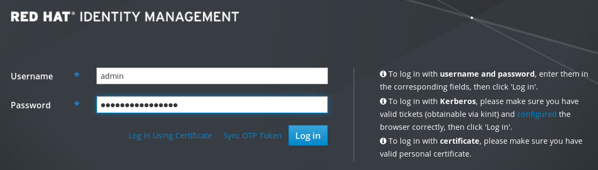

Chapter 9. 在Web浏览器中访问IdM Web UI
以下部分概述了IdM（身份管理）Web UI并描述了如何访问它。
IdM（身份管理）Web UI是IdM管理的Web应用程序，是IdM命令行工具的图形替代方案。
您可以访问IdM Web UI：
- IdM用户：一组有限的操作，具体取决于在IdM服务器中授予用户的权限。基本上，活动的IdM用户可以登录IdM服务器并配置自己的帐户。他们无法更改其他用户或IdM服务器设置的设置。
- 管理员： IdM服务器的完全访问权限。
Active Directory用户：一组有限的操作，具体取决于授予用户的权限。
Active Directory用户不能是Identity Management的管理员。
以下过程描述了首次使用密码登录到IdM（身份管理）Web UI。
首次登录后，您可以配置您的IdM服务器进行身份验证：
Kerberos票
有关详细信息，请参阅“身份管理中的Kerberos身份验证”一节 。
智能卡
有关详细信息，请参阅“配置IdM服务器以进行智能卡身份验证”一节 。
一次性密码（OTP） - 可以与密码和Kerberos身份验证结合使用。
有关详细信息，请参阅“身份管理中的一次性密码（OTP）身份验证”一节 。
程序
在浏览器地址栏中键入IdM服务器URL。该名称将类似于以下示例：
https://server.example.com
您只需要使用IdM服务器的DNS名称更改
server.example.com。这将在浏览器中打开IdM Web UI登录屏幕。

- 如果服务器没有响应或登录屏幕未打开，请检查您要连接的IdM服务器上的DNS设置。
如果您使用自签名证书，浏览器会发出警告。检查证书并接受安全例外以继续登录。
要避免安全性异常，请安装由证书颁发机构签名的证书。
在Web UI登录屏幕上，输入您在IdM服务器安装期间添加的管理员帐户凭据。
有关详细信息，请参阅安装Identity Management服务器：使用集成的DNS，以及集成的CA.
如果已在IdM服务器中输入个人帐户凭据，也可以输入他们的个人帐户凭据。

- 单击 。
成功登录后，您可以开始配置IdM服务器。